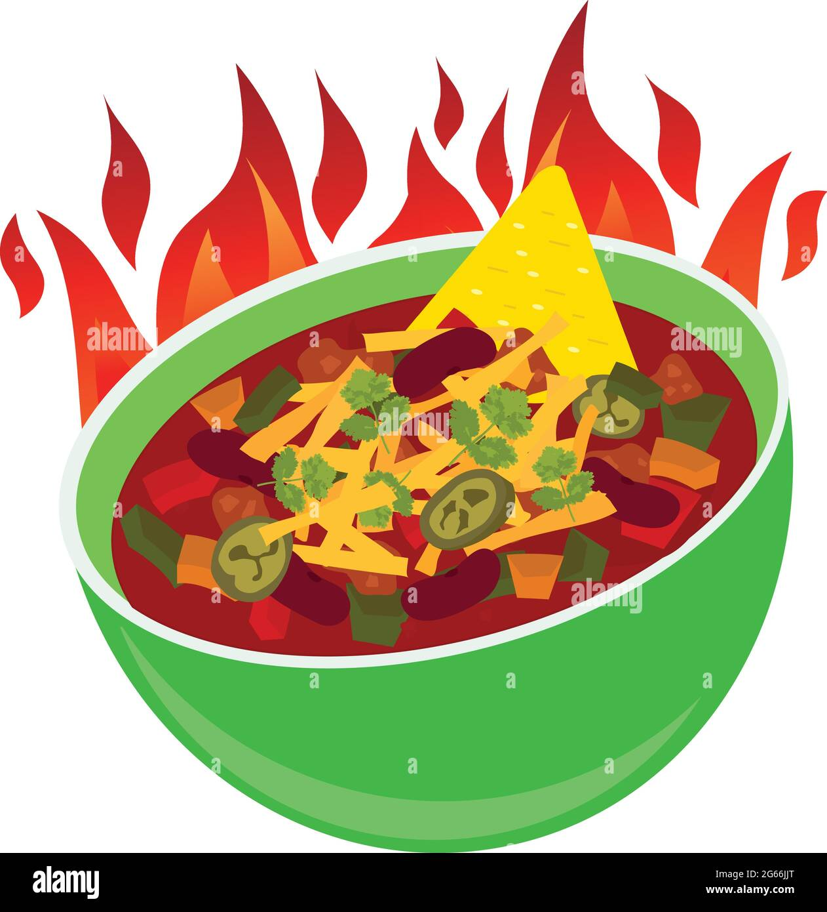

Albert Burneko's Deadspin Chili Framework

This is my go-to chili recipe, which is adapted from a great source recipe that is really more of an open source base upon which to build one's own personal recipe. The author of that recipe wrote several great, practical and hilarious recipes for the website Deadspin dot com, which was once a great sports website, but is now no longer so. You can check out his recipes at Deadspin still (sans the great illustrations that once accompanied them), but if you like his work I'd recommend you check out his current employer, Defector.com.
Equipment
- no special equipment (mostly a large heavy pot and stiff spatula or wooden spoon)
Ingredients
- 2 lbs ground beef (preferably 80/20 or similar)
- lots of white or yellow onions, chopped (lots being roughly 3 or 4 large)
- 3-4 shallots, minced
- lots of bell peppers, chopped
- lots of 1 to 3 other types of chili pepper, chopped (e.g. poblano, jalapeno, etc.)
- 1-3 T ground cumin
- 1 T chili powder
- 1 T cayenne powder (optional, is spicy)
- 1-3 T garlic powder
- 1 T onion powder (optional)
- 1-4 cloves garlic, crushed or pressed (optional)
- 1 non-absurdly small can tomato paste (as opposed to the other common size, a tomato paste for ants)
- 24 oz Mexican light beer (pref. "Burro piss", i.e. Corona, XX, Modelo, etc.)
- hot sauce (either Sriracha or Louisiana style [the latter being my preference]) to taste
- 2 cans dark red kidney beans (optional, esp. if in Texas)
- salt and pepper, to taste
Directions
Step 1 - Self Reflection
- If, having assembled the list of ingredients above, you find yourself angry, dismayed or confused, it's ok. Chili is a very simple yet highly variable dish whose factors are purely a matter or personal taste. Don't be afraid to swap out or add ingredients, change quantities, or experiment.
- Tasting and testing are both important for making any dish. Ingredients are listed in vague quantities so you can add as much or as little as tasts good to you. Just make sure as you work you are tasting during each step to attempt to refine the flavor you want to develop.
- Other techniques to this recipe are almost more important to developing righteous flavor than the ingredients. But again, never be afraid to experiment as long as it does not endanger neither the health, safety and welfare of the general public nor the fortitude of your home and well-being of your family. This may or may not include the addition of Beans if living 'twixt the Rios Rojo y Bravo.
Step 2 - Brown Meat and Sweat Veggies
- Ground beef is listed in the ingredients, but pork or any other protein can be included in this step. (Except I don't know how tofu works on any level and cannot be held responsible.)
- Heat a heavy-bottomed pot over high heat. Vegetable oil can be used, but 80/20 beef should have enough fat to make it work. If using lean protein a couple Tablespoons of oil might help.
- Once the meat is browned, reduce hear to medium-high and add your chopped vegetables (except fresh garlic, if using.) A generous pinch of salt can also be added here to help the vegetables sweat (or lose water.) Don't add too much salt since you are not seasoning; for soups and stews it is almost always best to season (i.e. salt and pepper) at the end of cooking to taste. Once onions are translucent, fresh garlic can be added for a couple minutes until fragrant.
-
Step 3 - Spice IT UP!
- Starting with your favorite spice, start adding them in gradually while sneaking a few tastes and smells here and there.
- Smelling the spice here is almost as effective or maybe even better than tasting. Add them one at time and smell, then adjust as necessary.
- Watch your heat as you cook here--don't be afread to turn the heat down. You don't want to burn the spices, aromatics (i.e. onion and garlic) nor the meat.
- You now are the owner of a mildly scalding, fragrant, aromatic, bland pot of chili! Congrats! If you're wondering where the bulk of the non-aromatic flavor comes from (or where the tomatoes are) just wait.
-
Step 4 - Carmelize and Deglaze
- In this step we'll carmelize a can of tomato paste to add sweet and acidic flavors, then deglaze it with beer, which will add additonal sweet and savory flavors.
- Turn the heat up to high and add the entire can of tomato paste, strirring to incorporate into the meat and veggie mixture.
- Keep the stirring constantly and, again, smell for sweet flavors developing. Once it starts to smell very sweet and maybe a little burned, don't panic. This is taking the concentrated tomato sugar and converting it to even sweeter compounds. Some will stick to the bottom of the pot, so have your beer ready for the next step before it burn too much.
- Once your chili smells awesome, pour an entire giant can (or two normal cans) of beer into the pot. Stir quickly and focus on scraping any stuck on ingredients (called "fond" in the business) until the bottom of the pot is cleaned. Once beer is boiling turn heat to medium and continue stirring until fully incorporated.
- A note on beer: light beer (and even cooler and on-brand--Mexcian leager) is great for this. We mainly need liquid in the pot and light beer like Mexican lager will provide water as well as more sweetness and savoriness. That being said, almost any beer can be used but darker, heavier beers will have a higher impact on final flavor and might even be overwhelming. Other liquids could include beef stock or a mixture of stock and beer.
- Once the beer is incorporated (any alcohol will have evaporated at this point) Stir in a few teaspoon or tablespoons of hot sauce to taste. The hot sauce adds needed acidity to balance the other flavors. Again, taste for flavor and know that the chili will condense as liquid evaportes from the pot.
-
Step 5 - Oh baby! You got a stew goin'!
- Reduce heat to medium low. Stir every five minutes for about 20 minutes, then every 10 to 15 minutes thereafter. Be sure each time to scrape the bottom of the pot and make sure to moniotry the temperature so nothing burns to hard (you can always scrape off burnt chili but it can make the final product slightly better.)
- Let the chili simmer for 1-1/2 to 2 hours total, stirring at least every 15 minutes.
- If you are foregoing beans, this is your last cooking step. If you want to develop more flavor in your chili, you can put a lid on the chili if you like the consistency and simmer on low for and additional hour or two. You can also add additional water or beef stock to adjust the consistency, adding liquid to lighten and turning up the heat and leaving the lid off to thicken the mixture.
-
Step 6 - BEANS
- Dump your two, entire cans of beans into your chili, liquid and all.Simmer on low for 1-1/2 to 2 hours, stirring every 20-30 minutes. If you are happy with the consistency, you can cook with the lid on. If it's still too loose, bump up the heat, leave the lid off, and stir every 10-15 minutes to prevent scorching.
- More BEAN talk: if using dried bean, be sure to soak overnight before use. Consider using the soaking liquid or another cooking liquid to approximate the liquid found in canned beans. This will be a necessary adjustment to get the right consistency if not using canned beans.
-
Step 7 - Serve
- Serve chili in a bowl with garnishes like shredded cheese, carb flakes (e.g. Fritos, oyster crackers, tortilla chips,etc.,) sour cream, minced onions, etc. Really whatever tickles your fancy.
- Chili can be served on literally anything thouhg. In tortillas, on eggs, on hot dogs (obviously.) The toppings and serving of chili is as diverse and flexible as it is, but always delicious (hopefully, if not--sad.)
- Another chili pro-tip: it is almost always better if refrigerated at least 24 hours before serving. It continues the melding of flavors that occured during simmering, which makes it taste even better as leftovers. It can be refrigerated for about a week or frozen for a few months.
Source: Deadspin dot com/Albert Burneko: How To Make Chili: A Guide For People Who Aren't Anti-Bean Zealots Or Elitist Scum